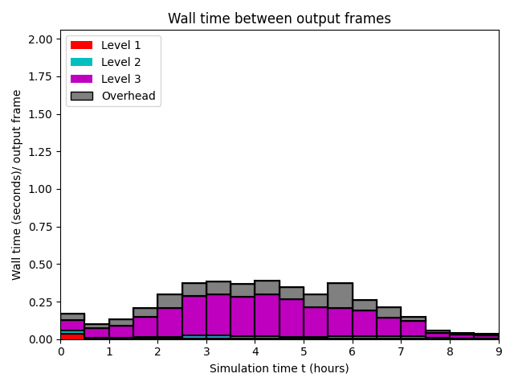

Datetime: 2024-05-15 08:42 From: /Users/rjl/clawpack_src/clawpack_master/geoclaw/examples/tsunami/chile2010/_output
============================== Timing Data ==============================
Integration Time (stepgrid + BC + overhead)
Level Wall Time (seconds) CPU Time (seconds) Total Cell Updates
1 0.092 0.097 0.864E+05
2 0.229 0.301 0.414E+06
3 2.739 14.655 0.216E+08
total 3.061 15.053 0.221E+08
All levels:
stepgrid 2.972 14.778
BC/ghost cells 0.082 0.267
Regridding 0.047 0.116
Output (valout) 0.955 0.954
Total time: 4.113 16.181
Using 6 thread(s)
Note: The CPU times are summed over all threads.
Total time includes more than the subroutines listed above
Note: timings are also recorded for each output step
in the file timing.csv.
clock_rate = 1000000000 per second, count_max = 9223372036854775807
clock_start = 1715776903963243000, clock_finish = 1715776908076678000
=========================================================================
